<div class="sidebar-container">
  <div class="sidebar">
    <div class="cont-botton-x-sidebar" (click)="toggleSidebar()">
      <svg
        xmlns="http://www.w3.org/2000/svg"
        width="16"
        height="16"
        fill="currentColor"
        class="bi bi-x-circle "
        viewBox="0 0 16 16"
        
      >
        <path
          d="M8 15A7 7 0 1 1 8 1a7 7 0 0 1 0 14zm0 1A8 8 0 1 0 8 0a8 8 0 0 0 0 16z"
        />
        <path
          d="M4.646 4.646a.5.5 0 0 1 .708 0L8 7.293l2.646-2.647a.5.5 0 0 1 .708.708L8.707 8l2.647 2.646a.5.5 0 0 1-.708.708L8 8.707l-2.646 2.647a.5.5 0 0 1-.708-.708L7.293 8 4.646 5.354a.5.5 0 0 1 0-.708z"
        />
      </svg>
    </div>
    <div class="menu-sidebar">
      <a href="" class="link-sidebar">Inicio</a>
      <a href="" class="link-sidebar">Tienda</a>
      <a href="" class="link-sidebar">Nosotros</a>
      <a href="" class="link-sidebar">Contacto</a>
      <a href="" class="link-sidebar">Blog</a>
    </div>
    <div class="redes-sidebar">
      
      
      
      
      
    </div>
  </div>
</div>
